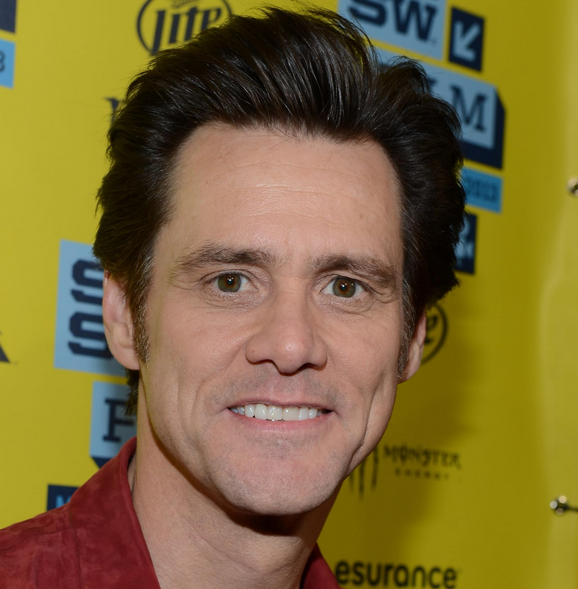
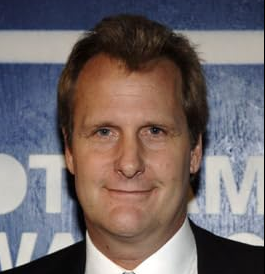
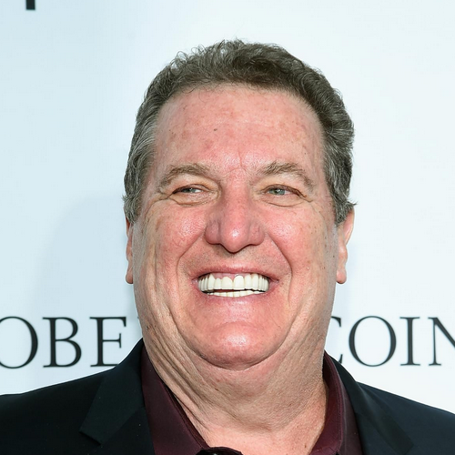
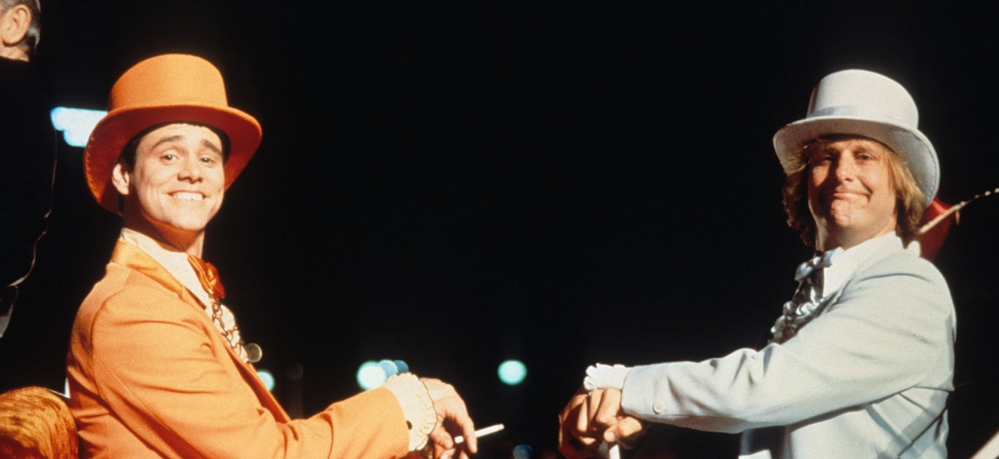

Reviews:
A movie that lives up to its title (8/10)
When this first came out in 1994, wild horses couldn't drag me to the theater to see it. Why? Preconceived notions. Thank goodness for Cable TV, or I never would have seen this film. I like it, it makes me laugh. This is not a masterpiece. This is not an academy award winning film, not a film of strategic plots, this is as sophomoric as it gets -- and that's fine with me. Sometimes, ya gotta escape. This'll do it. The title says it all. Jeff Daniels and Jim Carrey are perfect for their roles, every time I watch this film uncut, I am laughing. I was always thinking, "How dumb can you get?" And in the next frame it gets dumber. This is one of those films you just have fun with. Either you like this kind of humor or you don't. But the world is in such turmoil, this is a welcomed, stupid, silly, break that hits just the right spot. I find it "stupid-funny" beyond belief.
What a ride (7/10)
They might be dumb, but they sure are funny. I think what really makes the movie come to life, besides the superb acting performance of Jim Carrey and Jeff Daniels, is that the jokes feel genuine and innocent instead of overdone and forced. In one way or another it is easy to relate to some of what the poor guys go through. As the movie goes on it gets better and better. Overall great performance and funny jokes.
Dumb and Dumber is a classic (7/10)
The purpose of a comedy is to make you laugh, and there is a moment in "Dumb and Dumber" that made me laugh so loudly I embarrassed myself. I just couldn't stop. It's the moment involving the kid who gets the parakeet. But because I know that the first sentence of this review is likely to be lifted out and reprinted in an ad, I hasten to add that I did not laugh as loudly again, or very often. It's just as well. If the whole movie had been as funny as that moment, I would have required hospitalization.
Summary:
Dumb and Dumber is a 1994 American road buddy comedy film directed by Peter Farrelly, who cowrote the screenplay with his brother Bobby and Bennett Yellin. It is the first installment in the Dumb and Dumber franchise. Starring Jim Carrey and Jeff Daniels, it tells the story of Lloyd Christmas (Carrey) and Harry Dunne (Daniels), two dumb but well-meaning friends from Providence, Rhode Island, who set out on a cross-country road trip to Aspen, Colorado, to return a briefcase full of money to its owner, thinking it was abandoned as a mistake, though it was actually left as a ransom. Lauren Holly, Karen Duffy, Mike Starr, Charles Rocket, and Teri Garr play supporting roles. The film was released on December 16, 1994.
Cast:

Jim Carrey (Lloyd)

Jeff Daniels (Harry)

Mike Starr (Joe Mentalino)
Lauren Holly (Mary)
